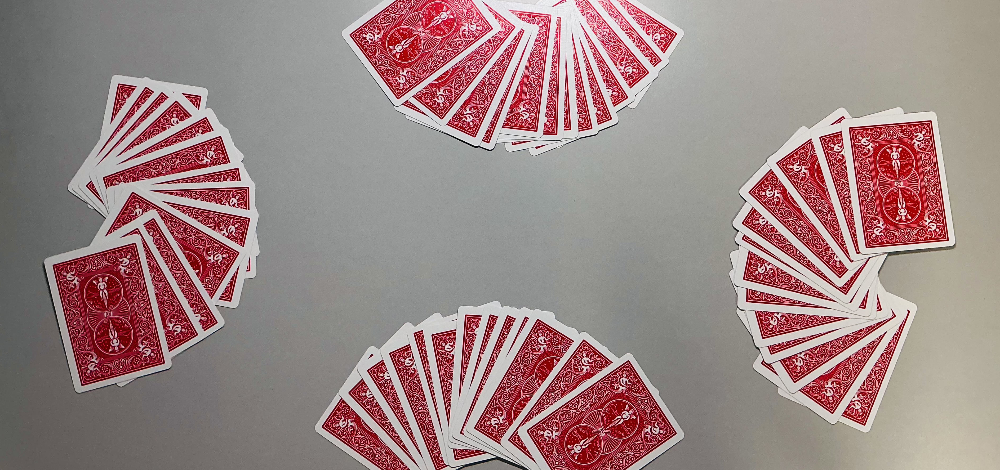
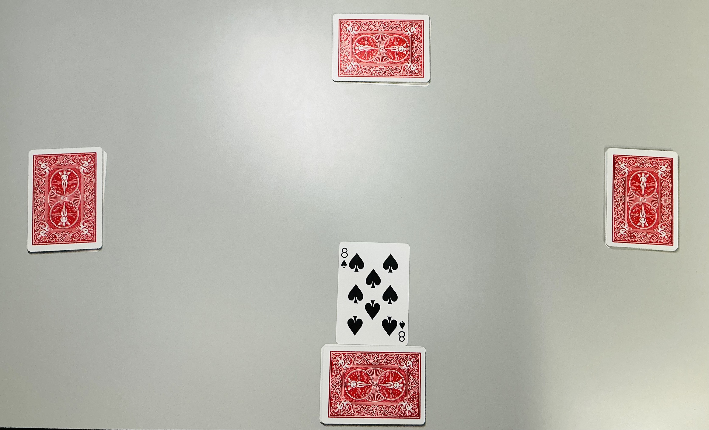
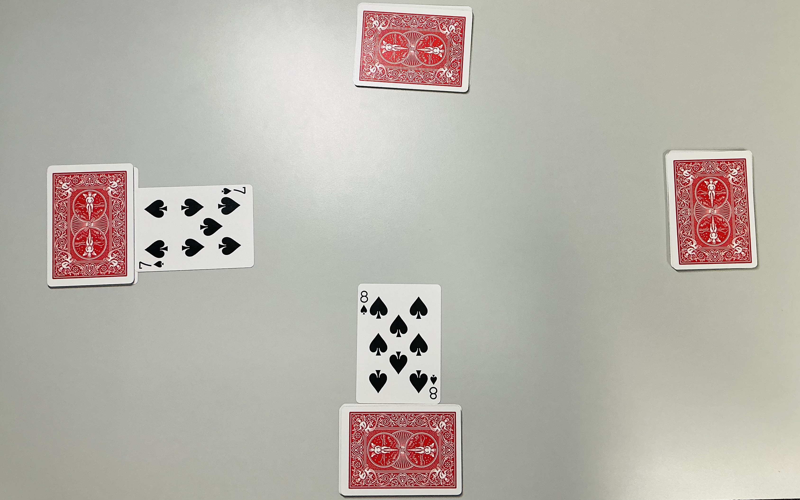
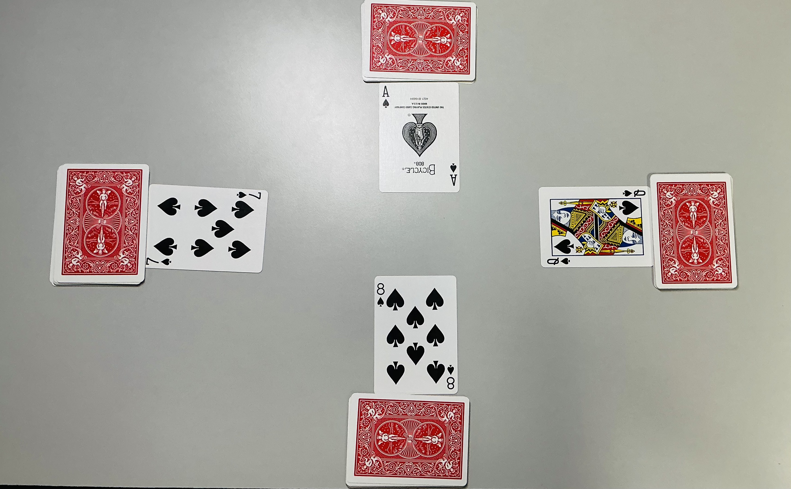
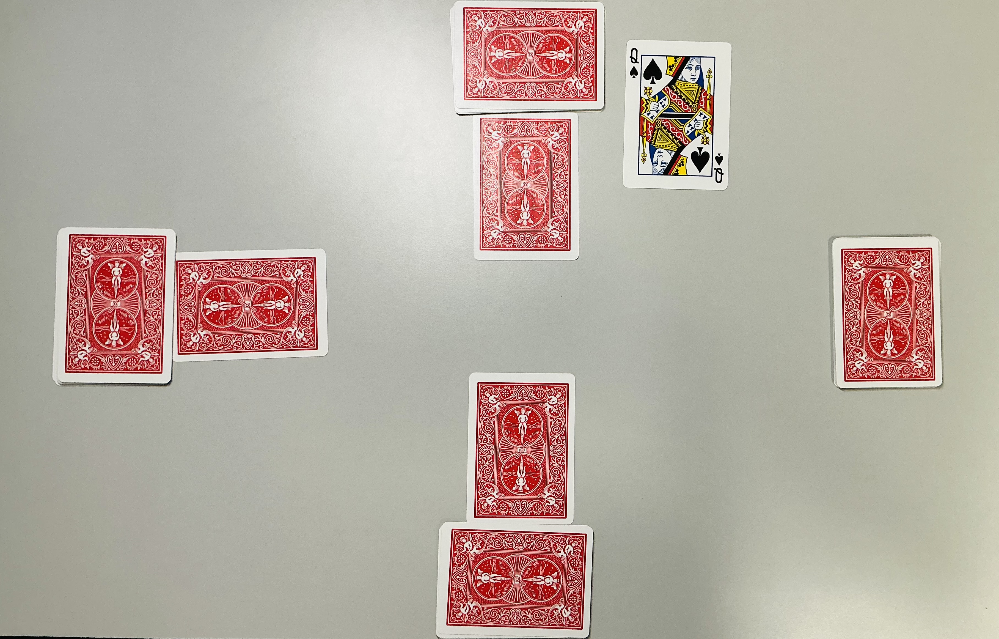
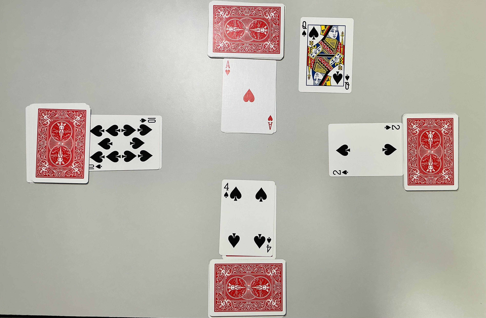
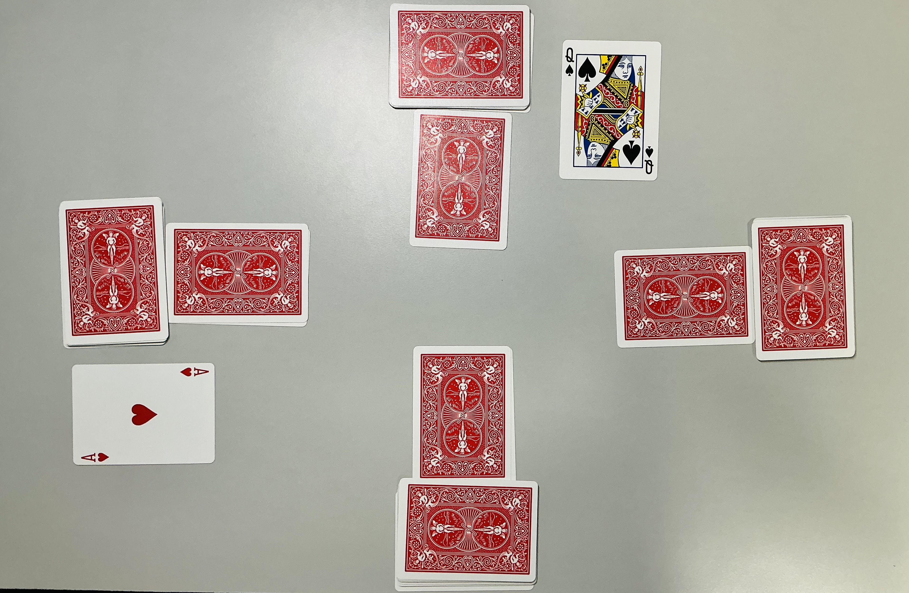
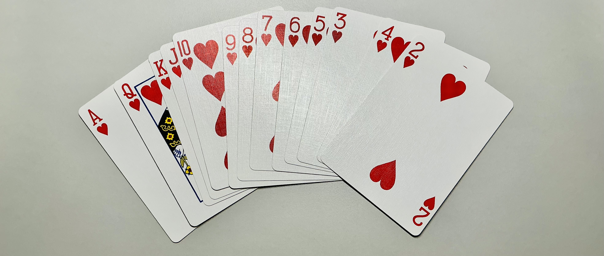
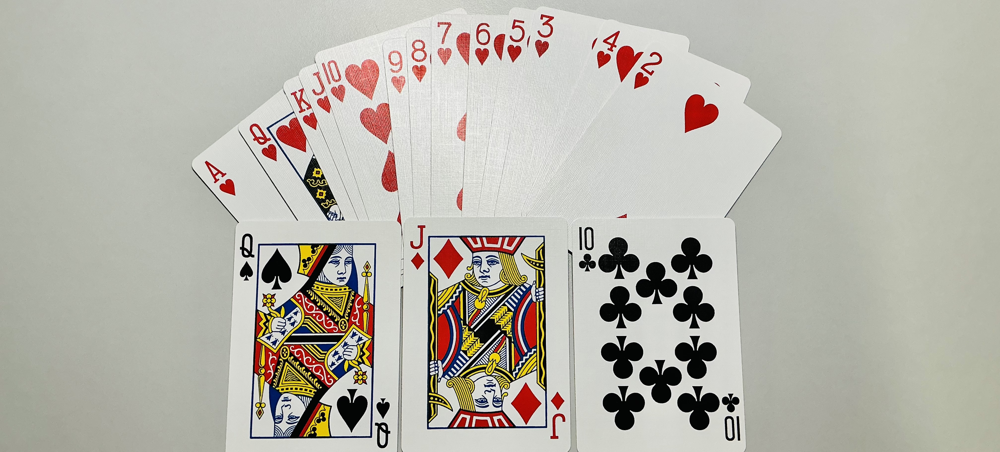

วิธีเล่นไพ่จับหมู
ผู้เขียน: ymii ・ 21 ก.ย. 2568 ・ กฎอิงจากการแข่งกีฬาน้องใหม่ ม.สีชมพู
ข้อมูลเบื้องต้น
จำนวนผู้เล่น: 4 คน
แจกไพ่: ได้ไพ่คนละ 13 ใบ
การลงไพ่: วน 13 ตา ใน 1 เกม, แต่ละตามีคนหนึ่ง หลีด (lead) วางเปิดหน้าไพ่
ทิศการลง: ตามเข็ม นาฬิกา (← ไปทางซ้าย)
เกมนี้จะถือว่า A ใหญ่ที่สุด รองลงมาเป็น K Q J … และ 2 เล็กที่สุด

การแจกไพ่: ผู้เล่น 4 คน นั่งรอบโต๊ะ ได้ไพ่คนละ 13 ใบ
การดำเนินเกม
ผู้เล่นที่ลงไพ่ที่ใหญ่ที่สุด จะได้ “กิน” ไพ่แต้มทั้งหมดในรอบนั้นๆ และได้สิทธิ์หลีดไพ่ตาถัดไป
วางไพ่ที่กินมา เรียงหงายหน้าไว้หน้าตัวเอง คนละกองกับกองไพ่ action ที่ลงทุกๆตา หากมีไพ่ไร้เเต้ม ไพ่ใบนั้นจะไม่ถูกกิน และถูกคว่ำหน้าลงบนกองไพ่ action ของคนที่ลง
ผู้เล่นต้องลงตามหน้าที่หลีดมาเท่านั้น (ไม่งั้นฟาวล์)
หากไม่มีหน้านั้นแล้ว ให้ทำการลงใบไหนก็ได้ในตานั้นๆ เรียกว่า "วอย" โดยคนที่ไพ่ใหญ่สุดตามหน้าที่คนเริ่มหลีดมาต้องกินไปเช่นเดิม
แต้มแต่ละไพ่
ดอก ไพ่ที่มีแต้ม ค่า / คำอธิบาย
โพแดง (♥)
ทุกใบ
ตัวเลข = แต้มลบตามตัวเลข เช่น 8♥ = -8
-20,-30,-40,-50 ตามลำดับ
หลามตัด (♦)
ไม่มีแต้ม ยกเว้น J
J (แจ็คตัด) = +100 — ไพ่ที่ทุกคนอยากกิน
โพดำ (♠)
ไม่มีแต้ม ยกเว้น Q
Q (แหม่มดำ) = -100 — ต้องระวังไม่ให้กิน
ดอกจิก (♣)
ไม่มีแต้ม ยกเว้น 10
10 (สิบจิก) แบ่งเป็น 2 กรณี
+50
ตัวอย่าง: ตาแรก

เริ่มเกม: ผู้เล่นทิศ S หลีด 8 โพดำ

ลงตามเข็ม: หากมีไพ่หน้าที่คนแรกหลีดมา ต้องลงหน้านั้นต่อ

ผู้เล่นทิศ N และ E: ลงไพ่ A โพดำ และ Q โพดำ ตามลำดับ

จบตา: ตานี้ A โพดำใหญ่ที่สุด จะต้องกินไพ่มีแต้ม(แหม่มดำ) และหลีดตาถัดไป
ตัวอย่าง: ตาที่มีคนวอย

ตานี้ทิศ S หลีด: เริ่มด้วย 4 โพดำ ส่วนทิศ N ไม่มีโพดำในมือแล้ว จึงสามารถลงไพ่ใดก็ได้ (วอย A โพแดง)

ทิศ W ได้กิน: แม้ตานี้ A จะใหญ่ที่สุด แต่ไม่ใช่หน้าที่เริ่มหลีด หน้าดำที่ใหญ่สุดต้องกิน
เป้าหมาย
ผู้ที่มีแต้มรวมสูงสุด (หรือบวกมากสุด) จะเป็นผู้ชนะ โดยผู้ที่หน้าตักว่าง/ไม่เคยกินไพ่เลยตลอดทั้งเกม จะได้แต้ม -50
ตัวอย่างการคำนวนแต้ม
สมมติผู้เล่น A กินไพ่ในรอบหนึ่งได้: 8♥, J♦, Q♠, 10♣-8 × 2 = -16

การนับแต้มพิเศษ: ช้วน +194

การนับแต้มพิเศษ: บิ๊กช้วน +588
เขียนโดยผู้เล่นนิรนาม จากคณะคู่ปรับตลอดกาลของบัญชี เพื่อให้ไพ่จับหมูเป็นที่นิยมมากขึ้นในมหาลัย และมีคณะอื่นๆมาแข่งมากขึ้น